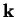

Next: Working with SIESTA
Up: lev00 and VASP
Previous: What to do for
Contents
What to do for processing the electronic/spin/partial density or
electrostatic potential?
For this calculation you can use the

-points of your
ground state run. Therefore, follow this sequence:
- Run VASP first:
- Total/spin densities are produced (the file CHGCAR) provided
that the LCHARG flag in the INCAR file is set to TRUE
- To produce a partial charge density (the file PARCHG), specify
LPARD=.TRUE. and IBAND with the range of bands to
be included (e.g. IBAND= 15 16 17 20) in the INCAR
file; see the VASP manual for more details
- To work on the local electrostatic potential, the LOCPOT file should
be produced by VASP; use LVTOT = .TRUE. in the INCAR
file for this
- After that you should run do_param to get param.inc
file from OUTCAR
- Compile lev00 using the script lev00.comp
(provided)
- Run lev00 as explained in Section 3.6.3
Thus, you will need the following VASP output files:
- CHGCAR for the total density or the total spin density calculation
- PARCHG for the partial charge density
- LOCPOT for the electrostatic potential calculation
Next: Working with SIESTA
Up: lev00 and VASP
Previous: What to do for
Contents
Lev Kantorovich
2006-05-08